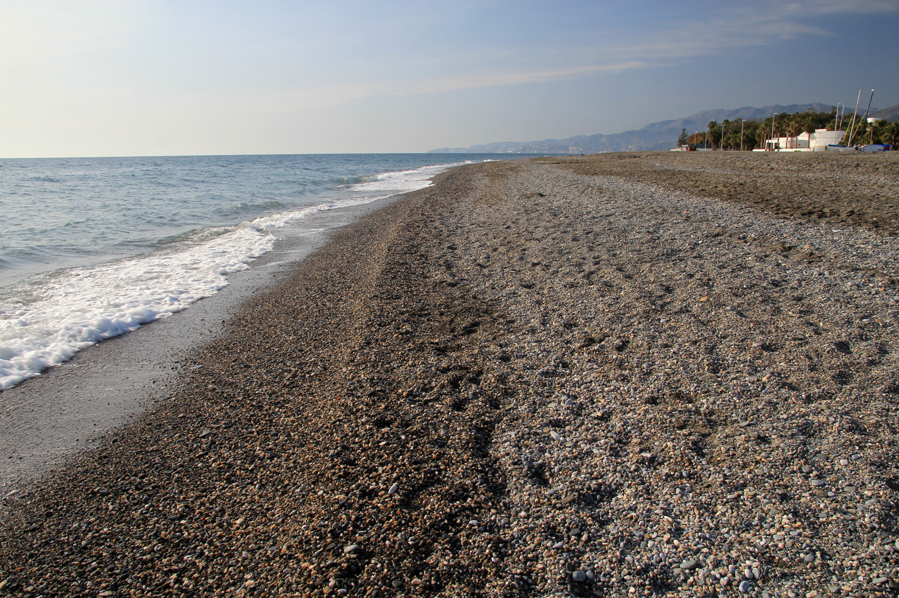
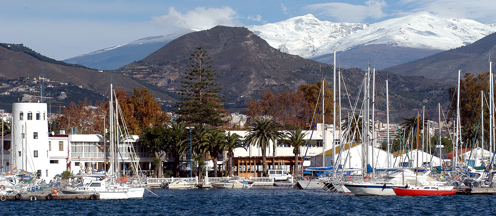

Playa de Poniente
Una de las playas más hermosas de Motril, ideal para relajarse y disfrutar del mar.

Puerto Deportivo
El corazón marítimo de la ciudad, con numerosos restaurantes y actividades acuáticas.